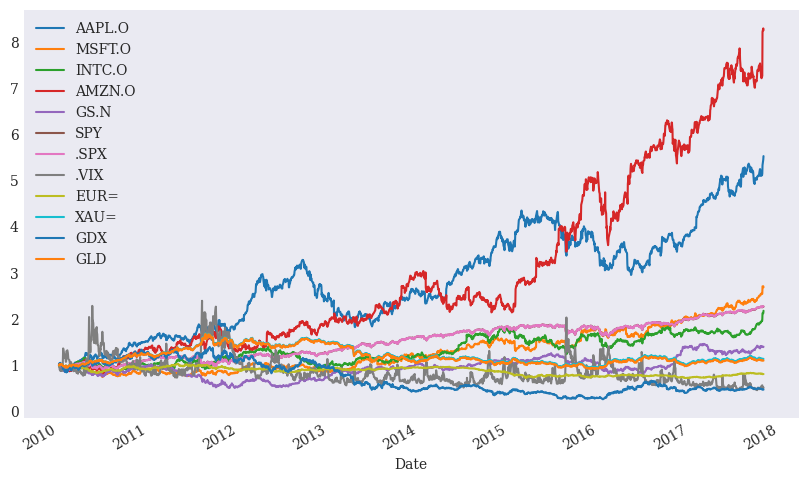
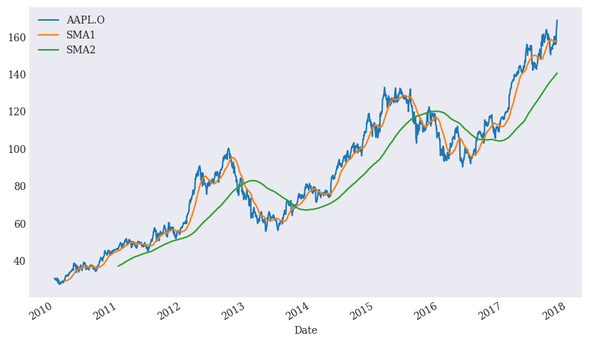
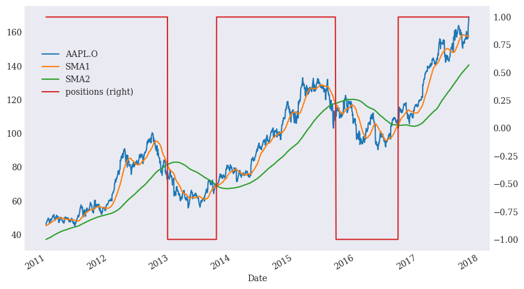
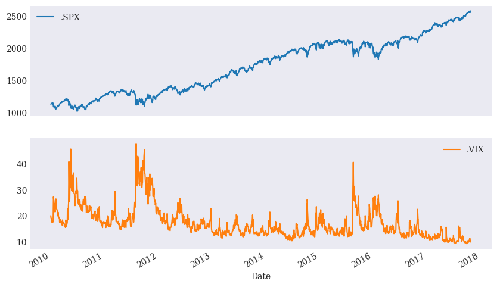
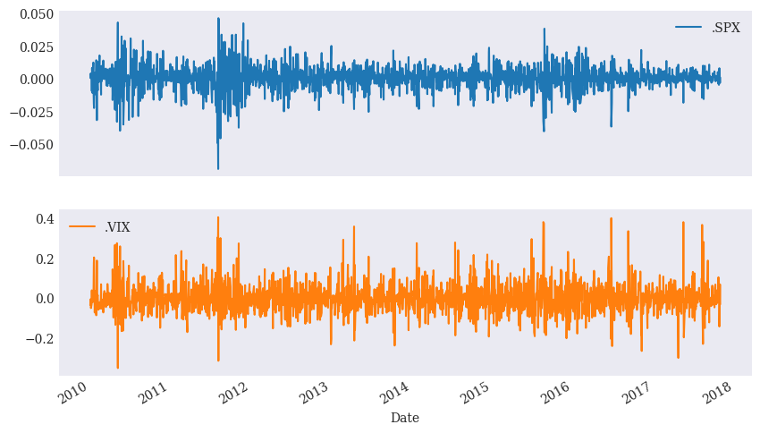

import numpy as np
import pandas as pd
from pylab import mpl, plt
plt.style.use('seaborn-v0_8-dark')
mpl.rcParams['font.family'] = 'serif'
%matplotlib inlineLecture 11 - Time Series Analysis
1. Overview
Time series analysis is crucial for financial data, as stock prices, economic indicators, and sales forecasts are often dependent on time.
What is Time Series Data?
- A time series is a sequence of data points recorded at successive and equally spaced points in time.
- Examples in Finance: Stock prices, interest rates, GDP growth, and exchange rates.
Components of Time Series Data - Trend: Long-term increase or decrease in the data. - Seasonality: Repeating patterns or cycles (e.g., sales increasing during the holiday season). - Noise/Residual: Random fluctuations that are not explained by the model.
This notebook covers:
- The basics of time series data and its components.
- How to manipulate and visualize time series data with
pandasandmatplotlib. - Apply basic time series models such as moving averages and correlations.
Setting the environment
2. Data inspection
The first part of the analysis is to inspect the data set containing the timeseries.
Inspection steps: 1. Import data 2. Generate summary statistics 3. Analysis changes over time 4. Adjust frequency (resampling)
2.1 Data import
For this part, we work with a standard csv database obtained from the Thomson Reuters Eikon Data. The data contains end-of-day (EOD) price data for a selection of instruments.
The following parameters apply:
file_path = 'Data/11/'
file_name = 'tr_eikon_eod_data.csv'Check file
# Data from the Thomson Reuters (TR) Eikon Data API
file_path = 'Data/11/'
file_name = 'tr_eikon_eod_data.csv'
file = open(file_path + file_name, 'r')file.readlines()[:5]['Date,AAPL.O,MSFT.O,INTC.O,AMZN.O,GS.N,SPY,.SPX,.VIX,EUR=,XAU=,GDX,GLD\n',
'2010-01-04,30.57282657,30.95,20.88,133.9,173.08,113.33,1132.99,20.04,1.4411,1120.0,47.71,109.8\n',
'2010-01-05,30.625683660000004,30.96,20.87,134.69,176.14,113.63,1136.52,19.35,1.4368,1118.65,48.17,109.7\n',
'2010-01-06,30.138541290000003,30.77,20.8,132.25,174.26,113.71,1137.14,19.16,1.4412,1138.5,49.34,111.51\n',
'2010-01-07,30.082827060000003,30.452,20.6,130.0,177.67,114.19,1141.69,19.06,1.4318,1131.9,49.1,110.82\n']file.close()Import into dataframe
# index_col = 0: the first column shall be handled as an index.
# parse_dates = True: the index values are of type datetime.
data = pd.read_csv(file_path + file_name, index_col = 0, parse_dates = True)- Use time as label on
index_col - Explicitly interpret as
datetimeobject onparse_dates- from documentation:
If True -> try parsing the index.
- from documentation:
Inspect dataframe
data.info()<class 'pandas.core.frame.DataFrame'>
DatetimeIndex: 1972 entries, 2010-01-04 to 2017-10-31
Data columns (total 12 columns):
# Column Non-Null Count Dtype
--- ------ -------------- -----
0 AAPL.O 1972 non-null float64
1 MSFT.O 1972 non-null float64
2 INTC.O 1972 non-null float64
3 AMZN.O 1972 non-null float64
4 GS.N 1972 non-null float64
5 SPY 1972 non-null float64
6 .SPX 1972 non-null float64
7 .VIX 1972 non-null float64
8 EUR= 1972 non-null float64
9 XAU= 1972 non-null float64
10 GDX 1972 non-null float64
11 GLD 1972 non-null float64
dtypes: float64(12)
memory usage: 200.3 KBdata.head()| AAPL.O | MSFT.O | INTC.O | AMZN.O | GS.N | SPY | .SPX | .VIX | EUR= | XAU= | GDX | GLD | |
|---|---|---|---|---|---|---|---|---|---|---|---|---|
| Date | ||||||||||||
| 2010-01-04 | 30.572827 | 30.950 | 20.88 | 133.90 | 173.08 | 113.33 | 1132.99 | 20.04 | 1.4411 | 1120.00 | 47.71 | 109.80 |
| 2010-01-05 | 30.625684 | 30.960 | 20.87 | 134.69 | 176.14 | 113.63 | 1136.52 | 19.35 | 1.4368 | 1118.65 | 48.17 | 109.70 |
| 2010-01-06 | 30.138541 | 30.770 | 20.80 | 132.25 | 174.26 | 113.71 | 1137.14 | 19.16 | 1.4412 | 1138.50 | 49.34 | 111.51 |
| 2010-01-07 | 30.082827 | 30.452 | 20.60 | 130.00 | 177.67 | 114.19 | 1141.69 | 19.06 | 1.4318 | 1131.90 | 49.10 | 110.82 |
| 2010-01-08 | 30.282827 | 30.660 | 20.83 | 133.52 | 174.31 | 114.57 | 1144.98 | 18.13 | 1.4412 | 1136.10 | 49.84 | 111.37 |
data.tail()| AAPL.O | MSFT.O | INTC.O | AMZN.O | GS.N | SPY | .SPX | .VIX | EUR= | XAU= | GDX | GLD | |
|---|---|---|---|---|---|---|---|---|---|---|---|---|
| Date | ||||||||||||
| 2017-10-25 | 156.41 | 78.63 | 40.78 | 972.91 | 241.71 | 255.29 | 2557.15 | 11.23 | 1.1812 | 1277.01 | 22.83 | 121.35 |
| 2017-10-26 | 157.41 | 78.76 | 41.35 | 972.43 | 241.72 | 255.62 | 2560.40 | 11.30 | 1.1650 | 1266.73 | 22.43 | 120.33 |
| 2017-10-27 | 163.05 | 83.81 | 44.40 | 1100.95 | 241.71 | 257.71 | 2581.07 | 9.80 | 1.1608 | 1272.60 | 22.57 | 120.90 |
| 2017-10-30 | 166.72 | 83.89 | 44.37 | 1110.85 | 240.89 | 256.75 | 2572.83 | 10.50 | 1.1649 | 1275.86 | 22.76 | 121.13 |
| 2017-10-31 | 169.04 | 83.18 | 45.49 | 1105.28 | 242.48 | 257.15 | 2575.26 | 10.18 | 1.1644 | 1271.20 | 22.48 | 120.67 |
Visualize timeseries
data.plot(figsize = (10,12), subplots = True);
Add labels
Labeling from Reuters Instrument Codes (RICs)
instruments = ['Apple Stock', 'Microsoft Stock',
'Intel Stock', 'Amazon Stock', 'Goldman Sachs Stock',
'SPDR S&P 500 ETF Trust', 'S&P 500 Index',
'VIX Volatility Index', 'EUR/USD Exchange Rate',
'Gold Price', 'VanEck Vectors Gold Miners ETF',
'SPDR Gold Trust']for ric, name in zip(data.columns, instruments):
print('{:8s} | {}'.format(ric, name))AAPL.O | Apple Stock
MSFT.O | Microsoft Stock
INTC.O | Intel Stock
AMZN.O | Amazon Stock
GS.N | Goldman Sachs Stock
SPY | SPDR S&P 500 ETF Trust
.SPX | S&P 500 Index
.VIX | VIX Volatility Index
EUR= | EUR/USD Exchange Rate
XAU= | Gold Price
GDX | VanEck Vectors Gold Miners ETF
GLD | SPDR Gold Trust2.2 Summary statistics
Built-in tools
data.describe().round(2)| AAPL.O | MSFT.O | INTC.O | AMZN.O | GS.N | SPY | .SPX | .VIX | EUR= | XAU= | GDX | GLD | |
|---|---|---|---|---|---|---|---|---|---|---|---|---|
| count | 1972.00 | 1972.00 | 1972.00 | 1972.00 | 1972.00 | 1972.00 | 1972.00 | 1972.00 | 1972.00 | 1972.00 | 1972.00 | 1972.00 |
| mean | 86.53 | 40.59 | 27.70 | 401.15 | 163.61 | 172.84 | 1727.54 | 17.21 | 1.25 | 1352.47 | 34.50 | 130.60 |
| std | 34.04 | 14.39 | 5.95 | 257.12 | 37.17 | 42.33 | 424.35 | 5.92 | 0.12 | 195.38 | 15.44 | 19.46 |
| min | 27.44 | 23.01 | 17.66 | 108.61 | 87.70 | 102.20 | 1022.58 | 9.19 | 1.04 | 1051.36 | 12.47 | 100.50 |
| 25% | 57.57 | 28.12 | 22.23 | 202.66 | 144.23 | 132.64 | 1325.53 | 13.25 | 1.13 | 1214.56 | 22.22 | 116.77 |
| 50% | 84.63 | 36.54 | 26.41 | 306.42 | 162.09 | 178.80 | 1783.81 | 15.65 | 1.29 | 1288.82 | 26.59 | 123.90 |
| 75% | 111.87 | 50.08 | 33.74 | 559.45 | 184.11 | 208.01 | 2080.15 | 19.20 | 1.35 | 1491.98 | 49.77 | 145.43 |
| max | 169.04 | 83.89 | 45.49 | 1110.85 | 252.89 | 257.71 | 2581.07 | 48.00 | 1.48 | 1897.10 | 66.63 | 184.59 |
data.mean()AAPL.O 86.530152
MSFT.O 40.586752
INTC.O 27.701411
AMZN.O 401.154006
GS.N 163.614625
SPY 172.835399
.SPX 1727.538342
.VIX 17.209498
EUR= 1.252613
XAU= 1352.471593
GDX 34.499391
GLD 130.601856
dtype: float64Customized satistics
data.aggregate(['min', 'mean', 'std', 'median', 'max']).round(2)| AAPL.O | MSFT.O | INTC.O | AMZN.O | GS.N | SPY | .SPX | .VIX | EUR= | XAU= | GDX | GLD | |
|---|---|---|---|---|---|---|---|---|---|---|---|---|
| min | 27.44 | 23.01 | 17.66 | 108.61 | 87.70 | 102.20 | 1022.58 | 9.19 | 1.04 | 1051.36 | 12.47 | 100.50 |
| mean | 86.53 | 40.59 | 27.70 | 401.15 | 163.61 | 172.84 | 1727.54 | 17.21 | 1.25 | 1352.47 | 34.50 | 130.60 |
| std | 34.04 | 14.39 | 5.95 | 257.12 | 37.17 | 42.33 | 424.35 | 5.92 | 0.12 | 195.38 | 15.44 | 19.46 |
| median | 84.63 | 36.54 | 26.41 | 306.42 | 162.09 | 178.80 | 1783.81 | 15.65 | 1.29 | 1288.82 | 26.59 | 123.90 |
| max | 169.04 | 83.89 | 45.49 | 1110.85 | 252.89 | 257.71 | 2581.07 | 48.00 | 1.48 | 1897.10 | 66.63 | 184.59 |
2.3 Changes over time
Statistical analysis methods are often based on changes over time and not the absolute values themselves.
There are multiple options to calculate the changes in a time series over time: - Absolute differences - Percentage changes - Logarithmic (log) returns.
Absolute differences
.diff(): subtracts each row’s value from the value in the previous row.
- It reveals the exact change in values from one time step to the next.
- The method returns a
dataframe
data.diff().head()| AAPL.O | MSFT.O | INTC.O | AMZN.O | GS.N | SPY | .SPX | .VIX | EUR= | XAU= | GDX | GLD | |
|---|---|---|---|---|---|---|---|---|---|---|---|---|
| Date | ||||||||||||
| 2010-01-04 | NaN | NaN | NaN | NaN | NaN | NaN | NaN | NaN | NaN | NaN | NaN | NaN |
| 2010-01-05 | 0.052857 | 0.010 | -0.01 | 0.79 | 3.06 | 0.30 | 3.53 | -0.69 | -0.0043 | -1.35 | 0.46 | -0.10 |
| 2010-01-06 | -0.487142 | -0.190 | -0.07 | -2.44 | -1.88 | 0.08 | 0.62 | -0.19 | 0.0044 | 19.85 | 1.17 | 1.81 |
| 2010-01-07 | -0.055714 | -0.318 | -0.20 | -2.25 | 3.41 | 0.48 | 4.55 | -0.10 | -0.0094 | -6.60 | -0.24 | -0.69 |
| 2010-01-08 | 0.200000 | 0.208 | 0.23 | 3.52 | -3.36 | 0.38 | 3.29 | -0.93 | 0.0094 | 4.20 | 0.74 | 0.55 |
data.diff(periods=2)| AAPL.O | MSFT.O | INTC.O | AMZN.O | GS.N | SPY | .SPX | .VIX | EUR= | XAU= | GDX | GLD | |
|---|---|---|---|---|---|---|---|---|---|---|---|---|
| Date | ||||||||||||
| 2010-01-04 | NaN | NaN | NaN | NaN | NaN | NaN | NaN | NaN | NaN | NaN | NaN | NaN |
| 2010-01-05 | NaN | NaN | NaN | NaN | NaN | NaN | NaN | NaN | NaN | NaN | NaN | NaN |
| 2010-01-06 | -0.434285 | -0.180 | -0.08 | -1.65 | 1.18 | 0.38 | 4.15 | -0.88 | 0.0001 | 18.5000 | 1.63 | 1.71 |
| 2010-01-07 | -0.542857 | -0.508 | -0.27 | -4.69 | 1.53 | 0.56 | 5.17 | -0.29 | -0.0050 | 13.2500 | 0.93 | 1.12 |
| 2010-01-08 | 0.144286 | -0.110 | 0.03 | 1.27 | 0.05 | 0.86 | 7.84 | -1.03 | 0.0000 | -2.4000 | 0.50 | -0.14 |
| ... | ... | ... | ... | ... | ... | ... | ... | ... | ... | ... | ... | ... |
| 2017-10-25 | 0.240000 | -0.200 | -0.05 | 6.61 | -0.42 | -0.82 | -7.83 | 0.16 | 0.0065 | -4.6701 | -0.31 | -0.45 |
| 2017-10-26 | 0.310000 | -0.100 | 0.40 | -3.47 | -3.12 | -0.94 | -8.73 | 0.14 | -0.0109 | -9.6000 | -0.52 | -1.00 |
| 2017-10-27 | 6.640000 | 5.180 | 3.62 | 128.04 | 0.00 | 2.42 | 23.92 | -1.43 | -0.0204 | -4.4100 | -0.26 | -0.45 |
| 2017-10-30 | 9.310000 | 5.130 | 3.02 | 138.42 | -0.83 | 1.13 | 12.43 | -0.80 | -0.0001 | 9.1300 | 0.33 | 0.80 |
| 2017-10-31 | 5.990000 | -0.630 | 1.09 | 4.33 | 0.77 | -0.56 | -5.81 | 0.38 | 0.0036 | -1.4000 | -0.09 | -0.23 |
1972 rows × 12 columns
data.diff().mean()AAPL.O 0.070252
MSFT.O 0.026499
INTC.O 0.012486
AMZN.O 0.492836
GS.N 0.035211
SPY 0.072968
.SPX 0.731745
.VIX -0.005003
EUR= -0.000140
XAU= 0.076712
GDX -0.012801
GLD 0.005515
dtype: float64Percentage changes
.pct_change(): calculates the percentage change between consecutive rows
- It reveals the relative change in values from one time step to the next.
- The method returns a
dataframe
data.pct_change().round(3).head()| AAPL.O | MSFT.O | INTC.O | AMZN.O | GS.N | SPY | .SPX | .VIX | EUR= | XAU= | GDX | GLD | |
|---|---|---|---|---|---|---|---|---|---|---|---|---|
| Date | ||||||||||||
| 2010-01-04 | NaN | NaN | NaN | NaN | NaN | NaN | NaN | NaN | NaN | NaN | NaN | NaN |
| 2010-01-05 | 0.002 | 0.000 | -0.000 | 0.006 | 0.018 | 0.003 | 0.003 | -0.034 | -0.003 | -0.001 | 0.010 | -0.001 |
| 2010-01-06 | -0.016 | -0.006 | -0.003 | -0.018 | -0.011 | 0.001 | 0.001 | -0.010 | 0.003 | 0.018 | 0.024 | 0.016 |
| 2010-01-07 | -0.002 | -0.010 | -0.010 | -0.017 | 0.020 | 0.004 | 0.004 | -0.005 | -0.007 | -0.006 | -0.005 | -0.006 |
| 2010-01-08 | 0.007 | 0.007 | 0.011 | 0.027 | -0.019 | 0.003 | 0.003 | -0.049 | 0.007 | 0.004 | 0.015 | 0.005 |
data.pct_change(periods = 7).round(3).head(10)| AAPL.O | MSFT.O | INTC.O | AMZN.O | GS.N | SPY | .SPX | .VIX | EUR= | XAU= | GDX | GLD | |
|---|---|---|---|---|---|---|---|---|---|---|---|---|
| Date | ||||||||||||
| 2010-01-04 | NaN | NaN | NaN | NaN | NaN | NaN | NaN | NaN | NaN | NaN | NaN | NaN |
| 2010-01-05 | NaN | NaN | NaN | NaN | NaN | NaN | NaN | NaN | NaN | NaN | NaN | NaN |
| 2010-01-06 | NaN | NaN | NaN | NaN | NaN | NaN | NaN | NaN | NaN | NaN | NaN | NaN |
| 2010-01-07 | NaN | NaN | NaN | NaN | NaN | NaN | NaN | NaN | NaN | NaN | NaN | NaN |
| 2010-01-08 | NaN | NaN | NaN | NaN | NaN | NaN | NaN | NaN | NaN | NaN | NaN | NaN |
| 2010-01-11 | NaN | NaN | NaN | NaN | NaN | NaN | NaN | NaN | NaN | NaN | NaN | NaN |
| 2010-01-12 | NaN | NaN | NaN | NaN | NaN | NaN | NaN | NaN | NaN | NaN | NaN | NaN |
| 2010-01-13 | -0.016 | -0.019 | 0.004 | -0.036 | -0.023 | 0.011 | 0.011 | -0.109 | 0.007 | 0.016 | 0.024 | 0.016 |
| 2010-01-14 | -0.023 | 0.000 | 0.029 | -0.054 | -0.043 | 0.011 | 0.011 | -0.089 | 0.009 | 0.022 | 0.009 | 0.021 |
| 2010-01-15 | -0.024 | 0.003 | 0.000 | -0.039 | -0.052 | -0.001 | -0.001 | -0.065 | -0.002 | -0.008 | -0.039 | -0.006 |
data.pct_change().mean().plot(kind = 'bar', figsize = (10,6));
Log Returns
Logarithmic (log) returns of time series data are the standard means to analyze returns on investments over time.
The formula is given by \[ \text{Log Return} = \ln\left(\frac{P_t}{P_{t-1}}\right) \]
In pandas, the denominator naturally obtains by shifting data by one row using the .shift() method.
rets = np.log(data / data.shift(1))rets.head().round(2)| AAPL.O | MSFT.O | INTC.O | AMZN.O | GS.N | SPY | .SPX | .VIX | EUR= | XAU= | GDX | GLD | |
|---|---|---|---|---|---|---|---|---|---|---|---|---|
| Date | ||||||||||||
| 2010-01-04 | NaN | NaN | NaN | NaN | NaN | NaN | NaN | NaN | NaN | NaN | NaN | NaN |
| 2010-01-05 | 0.00 | 0.00 | -0.00 | 0.01 | 0.02 | 0.0 | 0.0 | -0.04 | -0.00 | -0.00 | 0.01 | -0.00 |
| 2010-01-06 | -0.02 | -0.01 | -0.00 | -0.02 | -0.01 | 0.0 | 0.0 | -0.01 | 0.00 | 0.02 | 0.02 | 0.02 |
| 2010-01-07 | -0.00 | -0.01 | -0.01 | -0.02 | 0.02 | 0.0 | 0.0 | -0.01 | -0.01 | -0.01 | -0.00 | -0.01 |
| 2010-01-08 | 0.01 | 0.01 | 0.01 | 0.03 | -0.02 | 0.0 | 0.0 | -0.05 | 0.01 | 0.00 | 0.01 | 0.00 |
Cumulative returns over a period are obtained by summing up the log returns for each interval and then exponentiate the result:
\[ \text{Cumulative Return} = e^{\sum \text{Log Returns}} \]
rets.cumsum().apply(np.exp).plot(figsize = (10,6));
2.4 Resampling
Resampling of financial time series data refers to the process of converting the frequency of data points in a time series.
The resample() method in pandas is used to change the frequency of time series data.
data.resample(rule, label='right', closed='right', kind='timestamp')Parameters:
rule: This is a required parameter and specifies the new frequency for resampling. Some common time-based frequency strings are:'D': Day'W': Week'M': Month'Q': Quarter'A': Year One can also specify intervals like ‘5min’, ‘15T’ (15 minutes), ‘3H’ (3 hours), etc.
label: Determines how the timestamp labels in the resulting data are aligned:'right': Assigns the label to the end of the resampling period (e.g., a week ending on Sunday will be labeled as Sunday).'left': Assigns the label to the beginning of the resampling period (e.g., the first day of the week).
closed: Specifies which side of each interval is closed:'right': The interval includes the right endpoint.'left': The interval includes the left endpoint.
kind: Defines the type of index used:'timestamp': Generates a DatetimeIndex.'period': Generates a PeriodIndex.
Aggregation functions: After resampling, you can apply an aggregation method directly, like mean(), sum(), last(), first(), count(), etc. These specify how to aggregate data within each new time interval.
data.resample('1W', label='right').last().head()| AAPL.O | MSFT.O | INTC.O | AMZN.O | GS.N | SPY | .SPX | .VIX | EUR= | XAU= | GDX | GLD | |
|---|---|---|---|---|---|---|---|---|---|---|---|---|
| Date | ||||||||||||
| 2010-01-10 | 30.282827 | 30.66 | 20.83 | 133.52 | 174.31 | 114.57 | 1144.98 | 18.13 | 1.4412 | 1136.10 | 49.84 | 111.37 |
| 2010-01-17 | 29.418542 | 30.86 | 20.80 | 127.14 | 165.21 | 113.64 | 1136.03 | 17.91 | 1.4382 | 1129.90 | 47.42 | 110.86 |
| 2010-01-24 | 28.249972 | 28.96 | 19.91 | 121.43 | 154.12 | 109.21 | 1091.76 | 27.31 | 1.4137 | 1092.60 | 43.79 | 107.17 |
| 2010-01-31 | 27.437544 | 28.18 | 19.40 | 125.41 | 148.72 | 107.39 | 1073.87 | 24.62 | 1.3862 | 1081.05 | 40.72 | 105.96 |
| 2010-02-07 | 27.922829 | 28.02 | 19.47 | 117.39 | 154.16 | 106.66 | 1066.19 | 26.11 | 1.3662 | 1064.95 | 42.41 | 104.68 |
# Resample to quarterly data, labeling periods at the start of the quarter
data.resample('QE', label='left').mean().head()| AAPL.O | MSFT.O | INTC.O | AMZN.O | GS.N | SPY | .SPX | .VIX | EUR= | XAU= | GDX | GLD | |
|---|---|---|---|---|---|---|---|---|---|---|---|---|
| Date | ||||||||||||
| 2009-12-31 | 30.122098 | 29.254115 | 20.850836 | 125.804541 | 164.081639 | 112.546607 | 1123.593607 | 20.149672 | 1.382338 | 1109.900820 | 44.881902 | 108.738459 |
| 2010-03-31 | 36.391239 | 27.977135 | 21.917363 | 130.020095 | 148.985873 | 113.694198 | 1134.584921 | 26.391429 | 1.271935 | 1196.456190 | 49.862546 | 117.159690 |
| 2010-06-30 | 37.129258 | 24.790383 | 19.658259 | 130.454059 | 146.242969 | 109.856767 | 1096.246875 | 24.283594 | 1.293530 | 1226.698906 | 51.520945 | 120.021523 |
| 2010-09-30 | 44.500887 | 26.330313 | 20.678320 | 169.520000 | 161.686406 | 120.645516 | 1204.585625 | 19.318437 | 1.358853 | 1369.649375 | 59.041938 | 133.778188 |
| 2010-12-31 | 49.383274 | 26.989895 | 21.107540 | 176.948145 | 164.398387 | 130.385081 | 1302.528871 | 18.614839 | 1.370015 | 1386.920645 | 57.362411 | 135.333395 |
data.resample('1ME', label = 'right').last().head()| AAPL.O | MSFT.O | INTC.O | AMZN.O | GS.N | SPY | .SPX | .VIX | EUR= | XAU= | GDX | GLD | |
|---|---|---|---|---|---|---|---|---|---|---|---|---|
| Date | ||||||||||||
| 2010-01-31 | 27.437544 | 28.1800 | 19.40 | 125.41 | 148.72 | 107.3900 | 1073.87 | 24.62 | 1.3862 | 1081.05 | 40.72 | 105.960 |
| 2010-02-28 | 29.231399 | 28.6700 | 20.53 | 118.40 | 156.35 | 110.7400 | 1104.49 | 19.50 | 1.3625 | 1116.10 | 43.89 | 109.430 |
| 2010-03-31 | 33.571395 | 29.2875 | 22.29 | 135.77 | 170.63 | 117.0000 | 1169.43 | 17.59 | 1.3510 | 1112.80 | 44.41 | 108.950 |
| 2010-04-30 | 37.298534 | 30.5350 | 22.84 | 137.10 | 145.20 | 118.8125 | 1186.69 | 22.05 | 1.3295 | 1178.25 | 50.51 | 115.360 |
| 2010-05-31 | 36.697106 | 25.8000 | 21.42 | 125.46 | 144.26 | 109.3690 | 1089.41 | 32.07 | 1.2267 | 1213.81 | 49.86 | 118.881 |
rets.cumsum().apply(np.exp).resample('1ME', label='right').last().plot(figsize=(10, 6));
3. Rolling statistics
A rolling window is a technique used to apply a calculation to a specific, fixed-size subset of data, which “rolls” or moves across a dataset as a window.
The purpose of a rolling window is to compute statistics, like the mean or standard deviation, for consecutive subsets of data points, creating a dynamic, time-dependent view of trends, averages, or variability.
This technique is commonly used in time series analysis, especially in finance, to understand patterns over time while smoothing out short-term fluctuations.
In Python, the .rolling() method in pandas is used to apply a rolling window to a DataFrame or Series.
This method returns a “rolling” object that can apply various aggregation functions, like .mean(), .std(), .min(), etc., over the rolling window.
data.rolling(window=window_size).function()# Let's focus on a single financial time series
sym = 'AAPL.O'
data = pd.DataFrame(data[sym]).dropna()
data.tail()| AAPL.O | |
|---|---|
| Date | |
| 2017-10-25 | 156.41 |
| 2017-10-26 | 157.41 |
| 2017-10-27 | 163.05 |
| 2017-10-30 | 166.72 |
| 2017-10-31 | 169.04 |
window = 20- Calculate rolling minimum (min) and maximum (max): identify the range of prices over the past 20 days.
data['min'] = data[sym].rolling(window=window).min()data['max'] = data[sym].rolling(window=window).max()- Calculate rolling mean (mean) and standard deviation (std): The rolling mean provides a smoothed version of the price series. It smooths out short-term fluctuations, highlighting the medium-term trend. The standard deviation statistic shows the volatility of the stock price over each 20-day period.
data['mean'] = data[sym].rolling(window=window).mean()data['std'] = data[sym].rolling(window=window).std()data['median'] = data[sym].rolling(window=window).median()- Calculate Exponentially Weighted Moving Average (ewma): Unlike a simple moving average, which weights all points equally, the EWMA gives more importance to recent observations, allowing it to react faster to recent price changes. The halflife parameter controls how quickly the weights decay, with a shorter halflife emphasizing more recent data.
data['ewma'] = data[sym].ewm(halflife=0.5, min_periods=window).mean()data.head(25)| AAPL.O | min | max | mean | std | median | ewma | |
|---|---|---|---|---|---|---|---|
| Date | |||||||
| 2010-01-04 | 30.572827 | NaN | NaN | NaN | NaN | NaN | NaN |
| 2010-01-05 | 30.625684 | NaN | NaN | NaN | NaN | NaN | NaN |
| 2010-01-06 | 30.138541 | NaN | NaN | NaN | NaN | NaN | NaN |
| 2010-01-07 | 30.082827 | NaN | NaN | NaN | NaN | NaN | NaN |
| 2010-01-08 | 30.282827 | NaN | NaN | NaN | NaN | NaN | NaN |
| 2010-01-11 | 30.015684 | NaN | NaN | NaN | NaN | NaN | NaN |
| 2010-01-12 | 29.674256 | NaN | NaN | NaN | NaN | NaN | NaN |
| 2010-01-13 | 30.092827 | NaN | NaN | NaN | NaN | NaN | NaN |
| 2010-01-14 | 29.918542 | NaN | NaN | NaN | NaN | NaN | NaN |
| 2010-01-15 | 29.418542 | NaN | NaN | NaN | NaN | NaN | NaN |
| 2010-01-19 | 30.719969 | NaN | NaN | NaN | NaN | NaN | NaN |
| 2010-01-20 | 30.246398 | NaN | NaN | NaN | NaN | NaN | NaN |
| 2010-01-21 | 29.724542 | NaN | NaN | NaN | NaN | NaN | NaN |
| 2010-01-22 | 28.249972 | NaN | NaN | NaN | NaN | NaN | NaN |
| 2010-01-25 | 29.010685 | NaN | NaN | NaN | NaN | NaN | NaN |
| 2010-01-26 | 29.419971 | NaN | NaN | NaN | NaN | NaN | NaN |
| 2010-01-27 | 29.697685 | NaN | NaN | NaN | NaN | NaN | NaN |
| 2010-01-28 | 28.469972 | NaN | NaN | NaN | NaN | NaN | NaN |
| 2010-01-29 | 27.437544 | NaN | NaN | NaN | NaN | NaN | NaN |
| 2010-02-01 | 27.818544 | 27.437544 | 30.719969 | 29.580892 | 0.933650 | 29.821542 | 27.805432 |
| 2010-02-02 | 27.979972 | 27.437544 | 30.719969 | 29.451249 | 0.968048 | 29.711113 | 27.936337 |
| 2010-02-03 | 28.461400 | 27.437544 | 30.719969 | 29.343035 | 0.950665 | 29.685970 | 28.330134 |
| 2010-02-04 | 27.435687 | 27.435687 | 30.719969 | 29.207892 | 1.021129 | 29.547113 | 27.659299 |
| 2010-02-05 | 27.922829 | 27.435687 | 30.719969 | 29.099892 | 1.037811 | 29.419256 | 27.856947 |
| 2010-02-08 | 27.731401 | 27.435687 | 30.719969 | 28.972321 | 1.041556 | 29.214614 | 27.762787 |
data.dropna().head()| AAPL.O | min | max | mean | std | median | ewma | |
|---|---|---|---|---|---|---|---|
| Date | |||||||
| 2010-02-01 | 27.818544 | 27.437544 | 30.719969 | 29.580892 | 0.933650 | 29.821542 | 27.805432 |
| 2010-02-02 | 27.979972 | 27.437544 | 30.719969 | 29.451249 | 0.968048 | 29.711113 | 27.936337 |
| 2010-02-03 | 28.461400 | 27.437544 | 30.719969 | 29.343035 | 0.950665 | 29.685970 | 28.330134 |
| 2010-02-04 | 27.435687 | 27.435687 | 30.719969 | 29.207892 | 1.021129 | 29.547113 | 27.659299 |
| 2010-02-05 | 27.922829 | 27.435687 | 30.719969 | 29.099892 | 1.037811 | 29.419256 | 27.856947 |
- Plotting the Rolling Statistics:
ax = data[['min', 'mean', 'max']].iloc[-200:].plot(
figsize = (10,6), style = ['g--', 'r--', 'g--'], lw = 0.8)
data[sym].iloc[-200:].plot(ax = ax, lw = 2.0) ;
Technical Analysis Example: SMAs
A decades-old trading strategy based on technical analysis is using two simple moving averages (SMAs):
Trading strategy - Go long on a stock (or financial instrument in general) when the shorter-term SMA is above the longer-term SMA - Go short when the opposite holds true.
data['SMA1'] = data[sym].rolling(window=42).mean()
data['SMA2'] = data[sym].rolling(window=252).mean()data[[sym, 'SMA1', 'SMA2']].tail()| AAPL.O | SMA1 | SMA2 | |
|---|---|---|---|
| Date | |||
| 2017-10-25 | 156.41 | 157.610952 | 139.862520 |
| 2017-10-26 | 157.41 | 157.514286 | 140.028472 |
| 2017-10-27 | 163.05 | 157.517619 | 140.221210 |
| 2017-10-30 | 166.72 | 157.597857 | 140.431528 |
| 2017-10-31 | 169.04 | 157.717857 | 140.651766 |
data[[sym, 'SMA1', 'SMA2']].plot(figsize=(10, 6));
SMAs are then used to derive positions to implement a trading strategy.
Denote - a long position by a value of 1 - a short position by a value of -1.
The change in the position is triggered by a crossover of the two lines representing the SMA time series:
data.dropna(inplace = True)data['positions'] = np.where(data['SMA1'] > data['SMA2'], 1, -1)ax = data[[sym, 'SMA1', 'SMA2', 'positions']].plot(
figsize = (10,6), secondary_y = 'positions')
ax.get_legend().set_bbox_to_anchor((0.25,0.85));
4. Correlation analysis
4.1 Inspection of 2 timeseries
Let us consider the correlation analysis between two financial time series: the S&P 500 Index (.SPX) and the VIX volatility index (.VIX). - The S&P 500 is a benchmark index for U.S. stocks - the VIX measures market volatility expectations.
Typically, these indices have an inverse relationship: when the S&P 500 falls, the VIX tends to rise, indicating higher market fear or uncertainty.
raw = pd.read_csv(file_path + file_name, index_col=0, parse_dates=True)data = raw[['.SPX', '.VIX']].dropna()data.tail()| .SPX | .VIX | |
|---|---|---|
| Date | ||
| 2017-10-25 | 2557.15 | 11.23 |
| 2017-10-26 | 2560.40 | 11.30 |
| 2017-10-27 | 2581.07 | 9.80 |
| 2017-10-30 | 2572.83 | 10.50 |
| 2017-10-31 | 2575.26 | 10.18 |
Visual inspection
data.plot(subplots=True, figsize=(10, 6));
data.loc[:'2012-12-31'].plot(secondary_y='.VIX', figsize=(10, 6));
4.2 Logarithmic Returns
Producing and processing output
rets = np.log(data / data.shift(1))rets.head()| .SPX | .VIX | |
|---|---|---|
| Date | ||
| 2010-01-04 | NaN | NaN |
| 2010-01-05 | 0.003111 | -0.035038 |
| 2010-01-06 | 0.000545 | -0.009868 |
| 2010-01-07 | 0.003993 | -0.005233 |
| 2010-01-08 | 0.002878 | -0.050024 |
rets.dropna(inplace=True)Visual inspection
rets.plot(subplots=True, figsize=(10, 6));
The .plotting.scatter_matrix() produces correlation analysis plots within and across timeseries.
pd.plotting.scatter_matrix(rets,
alpha=0.2,
diagonal='hist',
hist_kwds={'bins': 35},
figsize=(10, 6));
4.3 OLS Regression
Ordinary Least Square regression provide a formal way to inspect the correlation between two variables.
np.polyfit() is a function in NumPy that fits a polynomial to a set of data points using least squares regression and returns the coeficient.
In other words, it finds the polynomial function of a specified degree that best fits the data in terms of minimizing the sum of squared errors between the fitted polynomial values and the actual data points
np.polyfit(x, y, deg, rcond=None, full=False, w=None, cov=False)Parameters: - x: The x-coordinates (independent variable) of the data points. - y: The y-coordinates (dependent variable) of the data points. - deg: Degree of the polynomial to be fit to the data. For example: - deg=1 fits a line (linear regression), - deg=2 fits a quadratic curve, and so on. - cov (optional): If True, the function also returns the covariance matrix of the polynomial coefficients.
reg, cov_matrix = np.polyfit(rets['.SPX'], rets['.VIX'], deg=1, cov=True)
print (f"The regression results in: VIX = {reg[0].round(2)} SPX + {reg[1].round(4)}")
# print (cov_matrix)The regression results in: VIX = -6.45 SPX + 0.0023Visual inspection
ax = rets.plot(kind='scatter', x='.SPX', y='.VIX', figsize=(10, 6))
ax.plot(rets['.SPX'], np.polyval(reg, rets['.SPX']), 'r', lw=2);
where np.polyval() is a function in NumPy used to evaluate (calculate) the value of a polynomial for a given set of values. Essentially, given a polynomial’s coefficients, np.polyval compute the y-values for corresponding x-values on that polynomial.
np.polyval(p, x)p: Array of polynomial coefficients in decreasing order of power.- For example, for a polynomial equation of the form \(y = ax^2 + bx + c\) , the coefficients array should be [\(a, b, c\)].
x: Value(s) at which to evaluate the polynomial. This can be a single number or an array of x-values.
4.4 Correlation
.corr() computes the Pearson correlation coefficient between pairs of columns in a DataFrame, a measure of the strength and direction of their linear relationship. - Values range from -1 (perfect negative correlation) to +1 (perfect positive correlation). - For .SPX and .VIX, a strong negative correlation is expected.
- Calling the method can be
- applied directly to a
DataFrameto calculate correlations between each column pair. - used with one column to calculate correlation with another column, e.g.,
df['col1'].corr(df['col2']).
- applied directly to a
rets.corr()| .SPX | .VIX | |
|---|---|---|
| .SPX | 1.000000 | -0.808372 |
| .VIX | -0.808372 | 1.000000 |
ax = rets['.SPX'].rolling(window=252).corr(
rets['.VIX']).plot(figsize=(10, 6))
ax.axhline(rets.corr().iloc[0, 1], c='r');
5. A glimpse into high-frequency data
High-frequency data in finance refers to data captured at very short time intervals, often seconds or milliseconds, typically related to trades, bids, and asks.
It provides detailed insights into market activity but requires careful handling due to its high volume and potential noise. Such data is commonly used in trading, market analysis, and to identify short-term price movements or anomalies.
For this part, we’re loading tick data from a csv file for EUR/USD, which contains high-frequency information, like bid and ask prices, captured by the FXCM broker.
The following parameters apply:
file_path = 'Data/11/'
file_name = 'fxcm_eur_usd_tick_data.csv'Check file
file_path = 'Data/11/'
file_name = 'fxcm_eur_usd_tick_data.csv'
file = open(file_path + file_name, 'r')file.readlines()[:10][',Bid,Ask\n',
'2017-11-10 12:00:00.007,1.16395,1.16394\n',
'2017-11-10 12:00:00.053,1.16394,1.16394\n',
'2017-11-10 12:00:00.740,1.16394,1.16393\n',
'2017-11-10 12:00:00.746,1.16394,1.16391\n',
'2017-11-10 12:00:00.756,1.16394,1.16392\n',
'2017-11-10 12:00:00.761,1.16393,1.16392\n',
'2017-11-10 12:00:00.772,1.16393,1.16391\n',
'2017-11-10 12:00:00.783,1.16391,1.16391\n',
'2017-11-10 12:00:00.819,1.16391,1.16392\n']file.close()Import and inspect data
tick = pd.read_csv(file_path + file_name,
index_col=0, parse_dates=True)tick.head()| Bid | Ask | |
|---|---|---|
| 2017-11-10 12:00:00.007 | 1.16395 | 1.16394 |
| 2017-11-10 12:00:00.053 | 1.16394 | 1.16394 |
| 2017-11-10 12:00:00.740 | 1.16394 | 1.16393 |
| 2017-11-10 12:00:00.746 | 1.16394 | 1.16391 |
| 2017-11-10 12:00:00.756 | 1.16394 | 1.16392 |
tick.info()<class 'pandas.core.frame.DataFrame'>
DatetimeIndex: 17352 entries, 2017-11-10 12:00:00.007000 to 2017-11-10 14:00:00.131000
Data columns (total 2 columns):
# Column Non-Null Count Dtype
--- ------ -------------- -----
0 Bid 17352 non-null float64
1 Ask 17352 non-null float64
dtypes: float64(2)
memory usage: 406.7 KBCompute mid-prices
\[ \text{Mid Price} = \frac{\text{Bid} + \text{Ask}}{2} \]
tick['Mid'] = tick.mean(axis = 1)tick['Mid'].plot(figsize = (10,6));
Resampling to 5-minute intervals
tick_resam = tick.resample(rule='5min', label='right').last()tick_resam.head()| Bid | Ask | Mid | |
|---|---|---|---|
| 2017-11-10 12:05:00 | 1.16425 | 1.16427 | 1.164260 |
| 2017-11-10 12:10:00 | 1.16454 | 1.16455 | 1.164545 |
| 2017-11-10 12:15:00 | 1.16449 | 1.16449 | 1.164490 |
| 2017-11-10 12:20:00 | 1.16437 | 1.16437 | 1.164370 |
| 2017-11-10 12:25:00 | 1.16429 | 1.16430 | 1.164295 |
tick_resam['Mid'].plot(figsize=(10, 6));